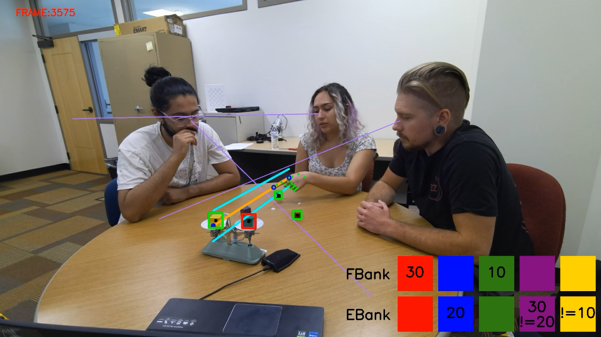
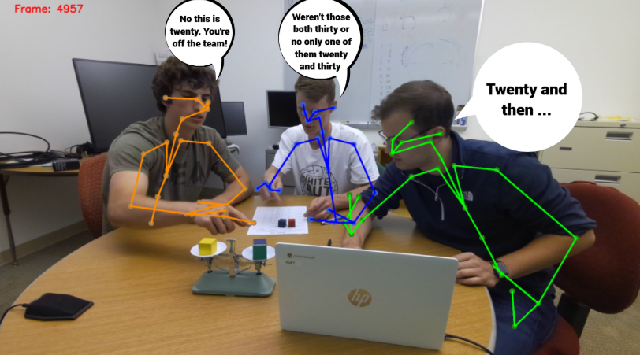
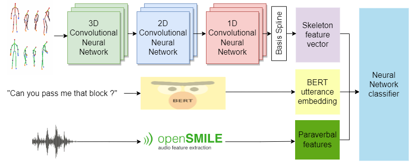

Colorado State University
PhD in Computer ScienceAugust 2022 - Present
I've been introduced to CSU through EPT's alumni while I was looking for a graduation internship to conclude my engineering studies. I was interested in Dr. Nikhil Krishnaswamy's work and wanted to work with him so I applied to his lab. After a very fruitful internship, I applied for the grad program and got accepted with Dr. Krishnaswamy's recommendation.
During my time here, I've taken very relevant courses, such as Natural Language Processing, Machine Learning, and plan on taking Artificial Intelligence, Analysis of Algorithms and Software Product and Process Evaluation in the future.
Ecole Polytechnique de Tunisie
Multidisciplinary Engineering degreeSep 2019 - June 2022
Ecole Polytechnique de Tunisie (also known as Tunisia Polytechnic School) is an engineering school, that only accepts 50 students each year, from the national entrance exam for engineering schools. As EPT is known to be the best school in Tunisia, its students are usually those who rank in the top 70 in the national exam, with about 3600 students taking that exam every year, meaning EPT accepts the best 2% students each year.
EPT has a general engineering program, making sure that its students are familiar with various subjects such as Mathematics (stochastic processes, optimization, numerical analysis, ...), Physics (Finite Element Method, Quantum physics, ...) Computer Science (C/C++, Java, AI, Algorithms and data structures, ...) Economics (Accounting, entrepreneurship, Finance, ...) and Signal Processing (Signal and systems theory, Spectral analysis, Multimedia data processing, ...).
The continuation of the intense and fast pace of this school that began at the preparatory system allowed me to learn how to learn, by studying different subjects in short periods of time and learning new approaches to problem solving. I also learned how to work under pressure, and still maintain a high level of productivity
Preparatory Institute for Engineering Studies of El Manar
Ranked 36th out of 2000 in the national examSep 2017 - June 2019
The Preparatory Institute for Engineering Studies of El Manar (IPEIEM) is an institute that prepares you to take the national entrance exam for engineering schools. This institute is among the top 3 best (nation wide) in terms of results in the national exam. For 2 years, this educational system puts the student under immense stress situations to extract the best of their performances. Students that want to enter engineering schools must first study advanced Mathematics (Algebra, Calculus, Probability ...) advanced Physics (from Newtonian physics to Quantum physics), Computer Science, Chemistry (Thermodynamics), Mechanics, French and English. These institutes prepare its students to take the very competitive national exam that would determine which engineering school each student goes to.
Graduate Research Assistant
Colorado State University, SIGNAL labAugust 2022 - Present
Being a Graduate Research Assistant at CSU helps me develop my skills by allowing me to invest more time into my research relative to course work. This is a chance for me to work with more people from different labs and universities, but also to juggle between a multitude of projects. As a member in the SIGNAL lab at CSU, this also allows me to dive deeper into Large Language Models and how to implement them in various tasks, with different datasets.
Graduation Internship
Colorado State University, SIGNAL labFebruary 2022 - June 2022
To conclude my engineering studies, I had a graduation internship within the SIGNAL lab at CSU. This 4 months internship allowed me to explore further the field of NLP, and also to publish my first paper "A Generalized Method for Automated Multilingual Loanword Detection".
Data Science Internship
DatagramJune 2021 - August 2021
Datagram is a Franco-Tunisian startup established in 2018, that works very close to retailers to analyse and improve their sales strategies. My job during the internship I had with datagram was to create an embedding space of retail products, to compare semantic similarities between a pair of products, with another pair.
Non-verbal feature contributions to multimodal interpretation of meaning.
This project focuses on enhancing the real-time multimodal processing capabilities of AI systems to better understand naturalistic conversations in collaborative settings. While language remains the primary modality, non-verbal cues such as gestures, actions, and prosody play a crucial role in conveying intent and meaning.

Common Ground Tracking in Multimodal Dialogue
The main idea behind this project is to keep track of the shared knowledge in a group of collaborators. I got to test different Large Language Models and compare their performances along with other modalities (prosodic, gesture, collaboration facets, actions). Accepted at LREC-Coling 2024.

Detection of collaborative states using multimodal features
In this project, we used multimodal data (speech, prosodic, visual) to classify collaborative problem solving facets during an utterance from a group task. This was the subject to a paper submitted for the 2023 AIED conference held in Tokyo, Japan.

Loanword detection
Working with members of the SIGNAL lab, we created a multilingual loanword detector using a handful of features such as semantics, phonetics, etc. This project gave birth to my first publication but also the start of the next adventure, a PhD in computer science.
How Good is Automatic Segmentation as a Multimodal Discourse Annotation Aid?
This was a chance to compare different utterance segmentation tools, more specifically Google's ASR and OpenAI's whisper and comparing them to an oracle segmentation method.
Semantic Distance
This was my first real experience with NLP apart from a few small projects while getting to know the field. My job in this project was to develop a metric that can determine how much two retail products are similar using their names. This was also the first time I get to implement methods such as Doc2Vec, and use the Universal Sentence Encoder.
Machine learning for background subtraction
This project was accounted as a final evaluation for the Computer Vision course at EPT. Me and a classmate implemented a machine learning technique for background removal, and applied it on suspect object detection. The ABODA dataset was used in this project. Trying to get good classification results on computer vision without surrendering to deep learning was very challenging, and improved our brainstorming skills.
Multi Task Deep Learning
As a mini transversal project, me and three classmates applied Multi task deep learning on the Global Wheat Head Detection Dataset. We were not seeking any particular improvement compared to the state of the art, this was more of an introduction to multi task learning as well as a proof of concept. We were supervised by our Computer Vision professor Dr. Wided Souidene.